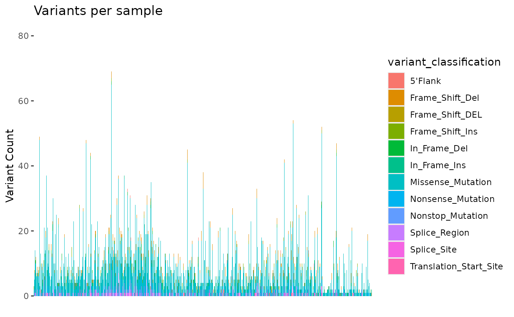

Analyzing GENIE BPC Data Using {gnomeR}
Source:vignettes/genie-bpc-vignette.Rmd
genie-bpc-vignette.RmdIntroduction
This vignette will walk through how to apply {gnomeR} functions to data from AACR Project Genomics Evidence Neoplasia Information Exchange BioPharma Collaborative (GENIE BPC). A broad overview of AACR Project GENIE BPC can be found here, with details on the clinical data structure available on the {genieBPC} package website.
For the purposes of this vignette, we will use the first publicly available GENIE BPC data release of non-small cell lung cancer patients, NSCLC v2.0-public.
Note that the GENIE BPC genomic data are unique in a few particular ways:
- These data are heterogeneous such that they come from multiple genomic panels from multiple institutions. Gene aliases across panels may vary.
- The GENIE BPC fusions and copy number alterations data may differ from common data formats. Differences are described in the Data Formats subsection below.
Data Access
To gain access to the GENIE BPC data, please follow the instructions
on the {genieBPC}
pull_data_synapse() vignette to register for a Synapse
account. Once your Synapse account is created and you authenticate
yourself using genieBPC::set_synapse_credentials(), you’ll
be ready to pull the GENIE BPC clinical and genomic data from Synapse
into your local environment:
library(genieBPC)
# if credentials are not stored in your R environment
set_synapse_credentials(username = "username", password = "password")
# if credentials are stored in your R environment
set_synapse_credentials()
#> ✔ You are now connected to 'Synapse' as
#> bstgeniebpc@mskcc.org for this R session!Obtain GENIE BPC Data
# pull NSCLC v2.0-public data from Synapse into the R environment
nsclc_2_0 = pull_data_synapse(cohort = "NSCLC",
version = "v2.0-public")
#> ✔ pt_char has been imported for "NSCLC_v2.0"
#> ✔ ca_dx_index has been imported for "NSCLC_v2.0"
#> ✔ ca_dx_non_index has been imported for "NSCLC_v2.0"
#> ✔ ca_drugs has been imported for "NSCLC_v2.0"
#> ✔ prissmm_imaging has been imported for "NSCLC_v2.0"
#> ✔ prissmm_pathology has been imported for "NSCLC_v2.0"
#> ✔ prissmm_md has been imported for "NSCLC_v2.0"
#> ✔ cpt has been imported for "NSCLC_v2.0"
#> ✔ mutations_extended has been imported for "NSCLC_v2.0"
#> ✔ fusions has been imported for "NSCLC_v2.0"
#> ✔ cna has been imported for "NSCLC_v2.0"The resulting nsclc_2_0 object is a nested list of
datasets, including the mutations, fusions, and copy number data.
nsclc_2_0$NSCLC_v2.0$mutations_extendednsclc_2_0$NSCLC_v2.0$fusionsnsclc_2_0$NSCLC_v2.0$cna
Note that while the GENIE BPC clinical data are only available via Synapse, the genomic data can be accessed via both Synapse and cBioPortal. Using the {cbioportalR} package, users can pull the GENIE BPC genomic data directly from cBioPortal:
library(cbioportalR)
# connect to the GENIE instance of cBioPortal
cbioportalR::set_cbioportal_db("https://genie.cbioportal.org/api")
#> ✔ You are successfully connected!
#> ✔ base_url for this R session is now set to "genie.cbioportal.org/api"
# view list of available studies from this instance of the portal
# NSCLC v2.0-public is: nsclc_public_genie_bpc
available_studies()
#> # A tibble: 7 × 13
#> studyId name description publicStudy groups status importDate allSampleCount
#> <chr> <chr> <chr> <lgl> <chr> <int> <chr> <int>
#> 1 brca_ak… AACR… "Targeted … TRUE GENIE… 0 2022-10-0… 428
#> 2 glioma_… DFCI… "1,535 gli… TRUE GENIE… 0 2023-04-1… 1535
#> 3 mbc_gen… Meta… "Breast tu… TRUE GENIE… 0 2023-04-1… 856
#> 4 genie_p… GENI… "GENIE v14… TRUE GENIE… 0 2023-10-1… 183302
#> 5 crc_pub… GENI… "CRC cohor… TRUE GENIE… 0 2023-10-1… 1551
#> 6 erbb2_g… ERBB… "ERBB2 coh… TRUE GENIE… 0 2023-10-1… 315
#> 7 nsclc_p… GENI… "NSCLC coh… TRUE GENIE… 0 2023-10-1… 2004
#> # ℹ 5 more variables: readPermission <lgl>, cancerTypeId <chr>,
#> # referenceGenome <chr>, pmid <chr>, citation <chr>
# obtain genomic data for GENIE BPC NSCLC v2.0-public
mutations_extended_2_0 <- get_mutations_by_study("nsclc_public_genie_bpc")
#> ℹ Returning all data for the "nsclc_public_genie_bpc_mutations" molecular profile in the "nsclc_public_genie_bpc" study
cna_2_0 <- get_cna_by_study("nsclc_public_genie_bpc")
#> ℹ Returning all data for the "nsclc_public_genie_bpc_cna" molecular profile in the "nsclc_public_genie_bpc" study
fusions_2_0 <- get_fusions_by_study("nsclc_public_genie_bpc")
#> ℹ Returning all data for the "nsclc_public_genie_bpc_structural_variants" molecular profile in the "nsclc_public_genie_bpc" studyData Formats
The genomic data for GENIE BPC are stored both on Synapse and in cBioPortal. The data structure differs depending on where the genomic data are downloaded from. Therefore, the remainder of this vignette will proceed by outlining the process of annotating genomic data separately for genomic data downloaded from Synapse and genomic data downloaded from cBioPortal.
Differences Between Synapse and cBioPortal Genomic Data
Please note that pulling genomic GENIE data from Synapse using
pull_data_synapse() and pulling GENIE data from cBioPortal
may result in small differences in the data due to systematic
differences in the processing pipelines employed by Synapse and
cBioPortal. These differences may include:
Data formatting - Some data sets (e.g. CNA files) may appear in wide format in Synapse data versus long format in cBioPortal data, or column attributes and names may appear sightly different (e.g. fusions files).
Default filtering - By default, cBioPortal filters out Silent, Intron, IGR, 3’UTR, 5’UTR, 3’Flank and 5’Flank, except for the promoter mutations of the TERT gene. See cBioPortal documentation for more details. These are retained in Synapse processing pipelines.
Hugo Symbols - Some genes have more than one accepted Hugo Symbol and may be referred to differently between data sources (e.g.
NSD3is an alias forWHSC1L1). Some tools exist to help you resolve gene aliases across genomic data sources. SeegnomeR::recode_alias(),cbioportal::get_alias()and vignettes from the {gnomeR} and {cbioportalR} for more information on how to use these functions and work with gene aliases.
Selecting a Cohort for Analysis
The following code chunk uses the
genieBPC::create_analytic_cohort() to create an analytic
cohort of patients diagnosed with stage IV NSCLC of adenocarcinoma
histology. Then, for patients with multiple genomic samples, the
genieBPC::select_unique_ngs() function chooses the genomic
sample with OncoTree code LUAD (if available). For patients with
multiple samples with OncoTree code LUAD, we will select the metastatic
genomic sample. If any patients have multiple metastatic samples with
OncoTree code LUAD, take the latest of the samples.
Note: for patients with exactly one genomic sample, that unique genomic sample will be returned regardless of whether it meets the argument criteria specified below.
# create analytic cohort of patients diagnosed with Stage IV adenocarcinoma
nsclc_2_0_example <- create_analytic_cohort(
data_synapse = nsclc_2_0$NSCLC_v2.0,
stage_dx = c("Stage IV"),
histology = "Adenocarcinoma"
)
# select unique NGS samples for this analytic cohort
nsclc_2_0_samples <- select_unique_ngs(
data_cohort = nsclc_2_0_example$cohort_ngs,
oncotree_code = "LUAD",
sample_type = "Metastasis",
min_max_time = "max"
)
#> ✔ 63 patients with > 1 next generation sequencing reports were identified
#> ✔ 62 of 63 had a unique NGS report selected based on given criteria.
#> ! 1 of 63 did not have a unique NGS report selected based on the selected criteria or by having the largest panel, so a NGS report was selected at random (be sure to set a seed for reproducbility!) See `attributes(<your-results>)$random_samples` to view these sample IDs.Create a dataframe of the corresponding panel and sample IDs:
Process Data with create_gene_binary()
The create_gene_binary() function takes inputs of
mutations, fusions, and CNA data and returns a binary matrix with the
alteration status for each gene, annotating missingness when genes were
not included on a next generation sequencing panel.
It is critical to utilize the specify_panel argument of
create_gene_binary(). Samples included in GENIE BPC were
sequenced across multiple sequencing platforms, with the genes included
varying across panels. Without the specify_panel argument,
missingness will not be correctly annotated, and genes that were not
tested will be incorrectly documented as not being altered.
Note: you can optionally check and recode any older gene names to
their newer Hugo Symbol in your data set by passing the
genie option to
create_gene_binary(recode_aliases=).
Using the genomic data from Synapse:
The fusions and CNA data as downloaded from Synapse require some
modifications prior to being supplied to the
gnomeR::create_gene_binary() function.
First, the CNA file can be transposed to match the expected input for
create_gene_binary() using
pivot_cna_longer():
# transpose CNA data from Synapse
cna_synapse_long <- pivot_cna_longer(nsclc_2_0$NSCLC_v2.0$cna)
#> ! Replacing all `.` to `-` in sample_id field (e.g. `P.0001930.T01.IM3` -> `P-0001930-T01-IM3`).
#> To prevent this, use argument `clean_sample_ids = FALSE`Next, the fusions file can be transposed to match the expected input
for create_gene_binary()
# transpose fusions data from Synapse
fusions_synapse_long <- reformat_fusion(nsclc_2_0$NSCLC_v2.0$fusions)Finally, the reformatted genomic data can be supplied to
create_gene_binary() to annotate genomic alterations for
patients in the analytic cohort of interest.
The CNA data as downloaded from cBioPortal only includes high level
CNA (-2, 2), so we will specify high_level_cna_only = TRUE
to be consistent with the results based on the genomic data as
downloaded from cBioPortal.
Additionally, we will use the built in
’genieoption to check gene aliases (see?create_gene_binary`
for more info).
nsclc_2_0_gen_dat_synapse <-
create_gene_binary(
mutation = nsclc_2_0$NSCLC_v2.0$mutations_extended,
cna = cna_synapse_long,
high_level_cna_only = TRUE,
fusion = fusions_synapse_long,
samples = nsclc_2_0_sample_panels$sample_id,
specify_panel = nsclc_2_0_sample_panels,
recode_aliases = "genie"
)
#> Warning: To ensure gene with multiple names/aliases are correctly grouped together, the
#> following genes in your dataframe have been recoded (if you are running
#> `create_gene_binary()` you can prevent this with `alias_table = FALSE`):
#> PARK2 recoded to PRKN
#> MRE11A recoded to MRE11
#> RFWD2 recoded to COP1
#> GNB2L1 recoded to RACK1
#> FAM46C recoded to TENT5C
#> WHSC1L1 recoded to NSD3
#> C17orf70 recoded to FAAP100
#> PVRL4 recoded to NECTIN4
#> HIST1H3C recoded to H3C3
#> BRE recoded to BABAM2
#> C1orf86 recoded to FAAP20
#> WHSC1 recoded to NSD2
#> HIST1H3B recoded to H3C2
#> TCEB1 recoded to ELOC
#> H3F3A recoded to H3-3A
#> HIST1H3G recoded to H3C8
#> HIST1H3D recoded to H3C4
#> HIST1H1C recoded to H1-2
#> HIST1H3I recoded to H3C11
#> PAK7 recoded to PAK5
#> HIST1H3E recoded to H3C6
#> HIST1H3H recoded to H3C10
#> HIST1H3F recoded to H3C7
#> FAM175A recoded to ABRAXAS1
#> HIST1H2BD recoded to H2BC5
#> HIST1H3J recoded to H3C12
#> HIST3H3 recoded to H3-4
#> H3F3C recoded to H3-5
#> FAM58A recoded to CCNQ
#> H3F3B recoded to H3-3B
#> SETD8 recoded to KMT5A
#> GPR124 recoded to ADGRA2
#> C11orf30 recoded to EMSY
#> WISP3 recoded to CCN6
#> HIST2H3C recoded to H3C14
#> HIST2H3D recoded to H3C13
#> ! 64 columns have all missing values. This may occur when there are genes in your data that are not in the specified panels (see `specify_panel` argument)
#> ! 7 `samples` had no alterations found in data sets (See `attr(<your_df>, 'zero_alteration_samples')` to view). These were retained in results as having 0 alterations.Using the genomic data from cBioPortal:
nsclc_2_0_gen_dat_cbio <-
create_gene_binary(
mutation = mutations_extended_2_0,
cna = cna_2_0,
fusion = fusions_2_0,
samples = nsclc_2_0_sample_panels$sample_id,
specify_panel = nsclc_2_0_sample_panels,
recode_aliases = "genie"
)
#> Warning: To ensure gene with multiple names/aliases are correctly grouped together, the
#> following genes in your dataframe have been recoded (if you are running
#> `create_gene_binary()` you can prevent this with `alias_table = FALSE`):
#> HIST3H3 recoded to H3-4
#> HIST1H3B recoded to H3C2
#> HIST1H3I recoded to H3C11
#> HIST1H3D recoded to H3C4
#> HIST1H3F recoded to H3C7
#> HIST1H3C recoded to H3C3
#> HIST1H3G recoded to H3C8
#> H3F3C recoded to H3-5
#> HIST1H3E recoded to H3C6
#> HIST1H1C recoded to H1-2
#> H3F3B recoded to H3-3B
#> HIST1H3J recoded to H3C12
#> HIST1H2BD recoded to H2BC5
#> H3F3A recoded to H3-3A
#> HIST1H3H recoded to H3C10
#> HIST2H3D recoded to H3C13
#> HIST2H3C recoded to H3C14
#> ! 57 columns have all missing values. This may occur when there are genes in your data that are not in the specified panels (see `specify_panel` argument)
#> ! 7 `samples` had no alterations found in data sets (See `attr(<your_df>, 'zero_alteration_samples')` to view). These were retained in results as having 0 alterations.Binary genomic matrices created using the genomic data downloaded
from Synapse and cBioPortal should be equal. We will proceed using the
nsclc_2_0_gen_dat_cbio object.
Collapse Data with summarize_by_gene()
We can summarize the presence of any alteration event (mutation,
amplification, deletion, structural variant) with the
summarize_by_gene() function, such that each gene is a
column that captures the presence of any event regardless of alteration
type.
Summarizing the first 10 samples for KRAS alterations:
Using the genomic data from Synapse:
nsclc_2_0_gen_dat_synapse[1:10, ] %>%
select(sample_id, KRAS, KRAS.Amp) %>%
summarize_by_gene()
#> # A tibble: 10 × 2
#> sample_id KRAS
#> <chr> <dbl>
#> 1 GENIE-DFCI-005843-1704 0
#> 2 GENIE-DFCI-004022-1313 0
#> 3 GENIE-DFCI-000013-8840 1
#> 4 GENIE-DFCI-000136-6004 1
#> 5 GENIE-DFCI-000215-8010 0
#> 6 GENIE-DFCI-000260-11571 0
#> 7 GENIE-DFCI-000381-9526 0
#> 8 GENIE-DFCI-000410-10003 1
#> 9 GENIE-DFCI-000454-5667 1
#> 10 GENIE-DFCI-000583-11175 0Analyzing Data
After the data have been transformed into a binary format, we can create summaries and visualizations to better understand the data.
Summarize Data with tbl_genomic()
The tbl_genomic() function summarizes the frequency of
alteration events from the binary data returned from
create_gene_binary() or
summarize_by_gene().
Using the genomic data from Synapse:
Summarizing the frequencies of KEAP1, STK11, and SMARCA4 alteration events:
nsclc_2_0_gen_dat_synapse %>%
select(sample_id, KEAP1, STK11, SMARCA4) %>%
tbl_genomic()| Characteristic | N = 5471 |
|---|---|
| STK11 | 71 (15%) |
| Unknown | 67 |
| KEAP1 | 65 (14%) |
| Unknown | 69 |
| SMARCA4 | 49 (10%) |
| Unknown | 67 |
| 1 n (%) | |
Users can subset their data set to only include genes above a certain
prevalence frequency threshold before passing to the function using the
subset_by_frequency() function.
Below, we summarize alteration events with >=10% frequency:
nsclc_2_0_gen_dat_synapse %>%
subset_by_frequency(t = 0.1) %>%
tbl_genomic()| Characteristic | N = 5471 |
|---|---|
| TP53 | 302 (55%) |
| EGFR | 168 (31%) |
| KRAS | 167 (31%) |
| LRP1B | 5 (20%) |
| Unknown | 522 |
| STK11 | 71 (15%) |
| Unknown | 67 |
| KEAP1 | 65 (14%) |
| Unknown | 69 |
| GRM3 | 3 (13%) |
| Unknown | 523 |
| RANBP2 | 3 (13%) |
| Unknown | 523 |
| SLIT2 | 3 (13%) |
| Unknown | 523 |
| SPTA1 | 3 (13%) |
| Unknown | 523 |
| GLI3 | 12 (12%) |
| Unknown | 444 |
| KMT2D | 53 (11%) |
| Unknown | 67 |
| CDKN2A.Del | 52 (11%) |
| Unknown | 67 |
| PRKDC | 22 (11%) |
| Unknown | 339 |
| SMARCA4 | 49 (10%) |
| Unknown | 67 |
| COL7A1 | 8 (10%) |
| Unknown | 467 |
| 1 n (%) | |
Using the genomic data from cBioPortal:
Summarizing the frequencies of KEAP1, STK11, and SMARCA4 alteration events:
nsclc_2_0_gen_dat_cbio %>%
select(sample_id, KEAP1, STK11, SMARCA4) %>%
tbl_genomic()| Characteristic | N = 5471 |
|---|---|
| STK11 | 71 (15%) |
| Unknown | 67 |
| KEAP1 | 65 (14%) |
| Unknown | 69 |
| SMARCA4 | 48 (10%) |
| Unknown | 67 |
| 1 n (%) | |
Summarizing alteration events with >=10% frequency:
nsclc_2_0_gen_dat_cbio %>%
subset_by_frequency(t = 0.1) %>%
tbl_genomic()| Characteristic | N = 5471 |
|---|---|
| TP53 | 301 (55%) |
| EGFR | 168 (31%) |
| KRAS | 167 (31%) |
| LRP1B | 5 (20%) |
| Unknown | 522 |
| STK11 | 71 (15%) |
| Unknown | 67 |
| KEAP1 | 65 (14%) |
| Unknown | 69 |
| GRM3 | 3 (13%) |
| Unknown | 523 |
| SLIT2 | 3 (13%) |
| Unknown | 523 |
| SPTA1 | 3 (13%) |
| Unknown | 523 |
| RANBP2 | 3 (13%) |
| Unknown | 523 |
| KMT2D | 53 (11%) |
| Unknown | 67 |
| CDKN2A.Del | 52 (11%) |
| Unknown | 67 |
| GLI3 | 11 (11%) |
| Unknown | 444 |
| PRKDC | 22 (11%) |
| Unknown | 339 |
| SMARCA4 | 48 (10%) |
| Unknown | 67 |
| COL7A1 | 8 (10%) |
| Unknown | 467 |
| 1 n (%) | |
Data Visualizations
We can use the mutation_viz() function to visualize
several aspects of the mutation data, including variant classification,
variant type, SNV class and top variant genes.
For the purposes of this vignette we will visualize the genomic data from cBioPortal.
Using the genomic data from cBioPortal:
mutation_viz_gen_dat_cbio <- mutation_viz(mutations_extended_2_0)
#> ! `samples` argument is `NULL`. We will infer your cohort inclusion and resulting data frame will include all samples with at least one alteration in mutation, fusion or cna data frames
#> Warning: To ensure gene with multiple names/aliases are correctly grouped together, the
#> following genes in your dataframe have been recoded (if you are running
#> `create_gene_binary()` you can prevent this with `alias_table = FALSE`):
#> HIST3H3 recoded to H3-4
#> HIST1H3B recoded to H3C2
#> HIST1H3I recoded to H3C11
#> HIST1H3D recoded to H3C4
#> HIST1H3F recoded to H3C7
#> HIST1H3C recoded to H3C3
#> HIST1H3G recoded to H3C8
#> H3F3C recoded to H3-5
#> HIST1H3E recoded to H3C6
#> HIST1H1C recoded to H1-2
#> H3F3B recoded to H3-3B
#> HIST1H3J recoded to H3C12
#> HIST1H2BD recoded to H2BC5
#> H3F3A recoded to H3-3A
#> HIST1H3H recoded to H3C10
mutation_viz_gen_dat_cbio
#> $varclass#>
#> $vartype#>
#> $samplevar
#>
#> $topgenes#>
#> $genecorReferences
Additional details regarding the GENIE BPC data and the {genieBPC} R package are published in the following papers:
Lavery, J. A., Brown, S., Curry, M. A., Martin, A., Sjoberg, D. D., & Whiting, K. (2023). A data processing pipeline for the AACR project GENIE biopharma collaborative data with the {genieBPC} R package. Bioinformatics (Oxford, England), 39(1), btac796. https://doi.org/10.1093/bioinformatics/btac796
Lavery, J. A., Lepisto, E. M., Brown, S., Rizvi, H., McCarthy, C., LeNoue-Newton, M., Yu, C., Lee, J., Guo, X., Yu, T., Rudolph, J., Sweeney, S., AACR Project GENIE Consortium, Park, B. H., Warner, J. L., Bedard, P. L., Riely, G., Schrag, D., & Panageas, K. S. (2022). A Scalable Quality Assurance Process for Curating Oncology Electronic Health Records: The Project GENIE Biopharma Collaborative Approach. JCO clinical cancer informatics, 6, e2100105. https://doi.org/10.1200/CCI.21.00105
Technical details regarding proper analysis of this data can be found in the following publication:
Brown, S., Lavery, J. A., Shen, R., Martin, A. S., Kehl, K. L., Sweeney, S. M., Lepisto, E. M., Rizvi, H., McCarthy, C. G., Schultz, N., Warner, J. L., Park, B. H., Bedard, P. L., Riely, G. J., Schrag, D., Panageas, K. S., & AACR Project GENIE Consortium (2022). Implications of Selection Bias Due to Delayed Study Entry in Clinical Genomic Studies. JAMA oncology, 8(2), 287–291. https://doi.org/10.1001/jamaoncol.2021.5153
Kehl, K. L., Uno, H., Gusev, A., Groha, S., Brown, S., Lavery, J. A., Schrag, D., & Panageas, K. S. (2023). Elucidating Analytic Bias Due to Informative Cohort Entry in Cancer Clinico-genomic Datasets. Cancer epidemiology, biomarkers & prevention: a publication of the American Association for Cancer Research, cosponsored by the American Society of Preventive Oncology, 32(3), 344–352. https://doi.org/10.1158/1055-9965.EPI-22-0875
Kehl, K. L., Riely, G. J., Lepisto, E. M., Lavery, J. A., Warner, J. L., LeNoue-Newton, M. L., Sweeney, S. M., Rudolph, J. E., Brown, S., Yu, C., Bedard, P. L., Schrag, D., Panageas, K. S., & American Association of Cancer Research (AACR) Project Genomics Evidence Neoplasia Information Exchange (GENIE) Consortium (2021). Correlation Between Surrogate End Points and Overall Survival in a Multi-institutional Clinicogenomic Cohort of Patients With Non-Small Cell Lung or Colorectal Cancer. JAMA network open, 4(7), e2117547. https://doi.org/10.1001/jamanetworkopen.2021.17547